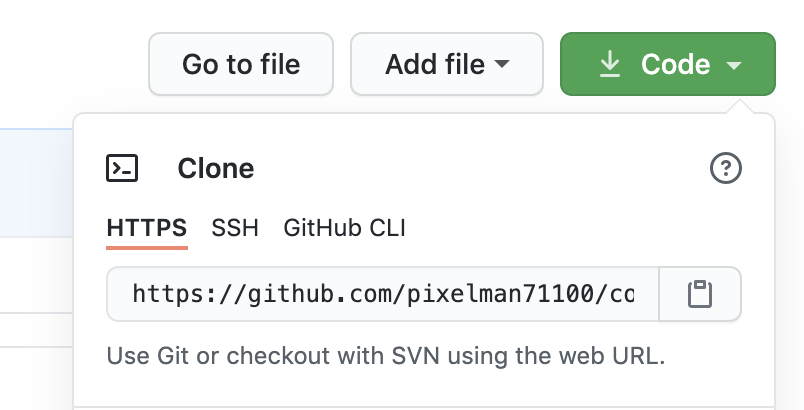

Débuter avec Git et GitHub
Ce devoir est noté : Répondez à chaque question
encadrée de pointillés rouges pour le rendu. Vous noterez les
numéros de section avant chaque réponse : exemple 1.1 : votre
réponse (Le terminal, question 1)
Le terminal
Nous allons commencer par une prise en main du terminal de votre
système.
Pour Windows, installez l’émulateur de terminal
PowerShell, que vous pouvez télécharger ici.
Les utilisateurs Linux et Mac ont déjà un terminal installé,
trouvez le raccourci et lancez-le.
Dans les exemples suivants, aidez-vous avec un explorateur
graphique de fichiers pour vous repérer dans l’arborescence.
-
Que font les commandes pwd,
ls et fkggfejedof ?
La commande pwd donne le chemin du répertoire dans lequel nous nous trouvons,
la commande ls donne la liste des répertoires présent dans celui où nous nous trouvons
et la commande fkggfejedof est du charabia.
-
Des commandes avec paramètres, maintenant, tapez
ls .
ls *
ls ..
ls /
ls Desktop
ls zeazeaedqsd (n'importe quoi)
Expliquez quels fichiers sont affichés par chacune
de ces commandes.
La commande ls . affiche tous les répertoires présent,
la commande ls * fait de même,
la commande ls .. affiche les répertoires présent dans le répertoire du répertoire où l'on se trouve,
la commande ls / remonte au répertoire racine et affiche les répertoires présents dans celui-ci,
la commande ls Desktop vas chercher un répertoire du nom de "Desktop" dans le répertoire présent,
et la commande ls zeazeaedqsd fera de même.
-
Utilisez les flèches haut et bas pour rappeler des anciennes
commandes saisies.
-
Les bons émulateurs de terminal supportent
l’autocompletion. Tapez pw, suivi de la
touche tab une, deux fois. Tapez
cd Des
suivi de la touche tab plusieurs fois, complétez
jusqu’à ce que le choix soit unique.
-
Les commandes mkdir et rmdir créent et
détruisent un dossier vide. Testez-les.
-
Créez un dossier nommé CNAM. Tapez les commandes
(vous pouvez vous aider avec l’autocompletion)
cd CNAM
pwd
touch fichier.txt
ls
ls ../CNAM
-
Lancez un éditeur de texte. Sous Windows, tapez la commande
notepad fichier.txt
Sous Linux tapez le nom d’un éditeur de texte présent sur votre
système, par exemple geany. Sous Mac, tapez
TextEdit
-
Écrivez quelques lignes dans l’éditeur de texte, et
sauvegardez.
-
Revenez au terminal, tapez
cat fichier.txt
-
Tapez
cd ..
pwd
-
Essayez d’effacer le dossier CNAM.
Que se passe-t-til ?
Le dossier CNAM possédant un enfant (test.txt), l'interface nous prévient que si on supprime le dossier CNAM, tous les enfants présent à l'intérieur seront effacés aussi, il nous demande donc confirmation.
Attention avec la commande rm, elle peut effacer votre disque
dur très rapidement...
-
Tapez
rm CNAM/*
ls CNAM
-
Effacez le dossier CNAM.
Travail #1 : Synthétisez, que font les commandes
ls, cd, pwd,
rm, mkdir, rmdir,
touch, cat ?
La commande ls liste tous les répertoires présent dans celui où l'on se trouve,
la commande cd permet de changer de répertoire,
la commande pwd donne le chemin du répertoire où nous nous trouvons,
la commande rm permet de suprimmer un ou plusieurs document d'un répertoire,
la commande mkdir permet de créer un répertoire,
la commande rmdir permet d'en suprimmer un,
la commande touch permet de créer un document .txt,
et la commande cat permet d'afficher le contenu d'un document .txt.
Encore des manipulations dans le terminal
-
Tapez
cd Desktop
pour vous positionner sur le bureau Windows. Choisissez un
dossier pas trop volumineux pour le compresser.
-
Tapez
tar -vcf test.tar ./VOTRE_DOSSIER/ .
Aidez-vous de l'auto-complétion (TAB). Vous disposez maintenant
d'un dossier compressé test.tar sur votre bureau.
-
Tapez
mv test.tar ~/Documents/
pour déplacer votre archive dans votre répertoire
Documents.
Déplacez-vous vers le répertoire
Documents. Notez la commande utilisée
La commande utilisé est cd.
Tapez
tar -vxf test.tar
pour décompresser votre archive dans le répertoire courant.
Listez le contenu de votre archive décompactée.
Quelle est la commande utilisée ?
La commande utilisée est ls (nom du fichier).
Supprimez votre archive test.tar. Quelle est la
commande utilisée ?
La commande utilisée est rm test.tar.
Attention, cette commande supprime un fichier sans
prévenir...
Supprimez le contenu de votre archive décompactée
récursivement avec l'option -r. Quelle est la commande
utilisée ?
La commande utilisée est rm -r (nom du fichier).
Attention : cette commande est encore plus dangereuse que la
précédente... !!!
Git
Git est un client de contrôle de version (VCS) Open Source.
Concrètement, Git garde une trace de tous les fichiers d'un projet
(date, auteur, modifications), c'est donc un logiciel idéal pour le
travail collaboratif.
Nous pouvons maintenant passer à la découverte de Git. Pour
cela, nous devons commencer par l’installer.
Avant d'installer Git, vérifiez s'il n'est pas déjà installé...
Dans le terminal, tapez
git
Windows
Installer msysGit : https://msysgit.github.io/.
Lorsque l’installeur vous le propose, choisissez les
options :
- Run Git from the Windows command prompt,
- Check out Windows style, commit Linux style line
endings.
L’installation inclut un émulateur de terminal appelé Git
Bash, similaire à PowerShell, mais avec un mode
d’autocompletion plus adapté à Git.
Alternativement, vous pouvez installer le client Git de GitHub,
téléchargeable ici : http://windows.github.com
(uniquement pour Windows 7 ou plus). msysGit sera installé
avec.
Mac
Le plus simple c’est d’installer le client Git de GitHub,
téléchargeable ici : http://mac.github.com.
Alternativement, vous pouvez taper git dans le
terminal, et l’OS vous proposera d’installer Git s’il n’est pas
déjà présent.
Découverte de Git
Dans ce cours nous allons utiliser Git à travers un client
graphique. Sous Windows, PowerShell ou Git Bash peuvent être
utilisés indifféremment, mais le deuxième se révélera plus pratique
si vous avez pris l’habitude d’utiliser la touche tab pour
compléter.
-
Tapez les commandes
git git help
-
Tapez
git help init
et lisez la documentation (touche q pour
sortir).
-
Créez un dossier, entrez dans le dossier (commande
cd), puis initialisez-le pour Git avec git
init.
-
Créez deux fichiers de texte nommés a.txt et
b.txt.
-
Testez les commandes
git status
git diff
git add a.txt
git status
git commit -m "Premier commit"
git status
git log --stat
Que font-elles ?
git status renseigne sur le statut du dossier, et les dossier qui ont été ajouté et ceux ne l'ayant pas encore été par exemple.
git diff permet de voir les modifications entre les commits.
git add a.txt permet d'ajouter un document ou un dossier, ici le document a.txt.
git commit -m "Premier commit" est la commande utilisée pour s'oumettre des modifications avec un commentaire.
git log --stat permet de voir les logs (journal) du dossier.
-
Créez un deuxième commit contenant le fichier
b.txt. Lisez à nouveau la sortie de git
status et de git log.
-
Tapez
git rm a.txt
ls
git status
puis commitez le changement. Lisez le log.
Devoir #2 : Veuillez décrire le wokflow basique
avec Git (liste des commandes surtout)
Le workflow basique avec Git est :
- git help : pour avoir la liste des différente commande et leur utilité.
- git init : essentielle pour initier un répertoire git.
- git status : pour connaître le status de son répertoire.
- git add : pour ajouter des documents/dossiers.
- git commit : pour soumettre des changements.
Si vous ne l’avez pas déjà fait, il est temps de configurer
votre client Git avec votre nom et votre adresse email (il ne doit
pas nécessairement s’agir d’une adresse réelle). Ceci vous évitera
quelques avertissements pénibles de la part de Git.
Tapez les commandes
git config --global user.name "Votre nom"
git config --global user.email "vous@votre_ordinateur"
git config --global push.default "simple"
Tu tires ou tu pousses
?
Basiquement, avec Git, on fait deux choses : Soit on pousse
notre code (push) vers Github, soit on tire notre code
(pull) vers notre répertoire local. Nous allons voir
maintenant comment créer une copie indépendante (un
fork) d'un repository en ligne.
N’oubliez pas de créer votre compte GitHub, si ce n’est pas déjà
fait...
Connectez-vous sur GitHub, puis visitez ce lien.
GitHub va prendre quelques secondes pour vous en créer une copie
personnelle (fork).
Lisez le fichier de README, qui s’affiche dans votre repository
Github. Dans les réglages renommez ce repository, puis créez une
copie locale du repository avec
git clone
Cliquez sur le bouton vert pour récupérer l'url du repository à
cloner

-
Dans l’interface web de GitHub, éditez le fichier
README.md, et commitez les changements.
-
Tirez les changement dans votre copie locale du répertoire :
cd cours-git/
git status
git log
git pull
git status
git log
-
Modifiez le fichier README.md sur votre ordinateur,
commitez les changements, puis poussez vos changements sur
GitHub :
git status
git push
-
Faites encore un changement à README.md dans
l’interface de GitHub. Commitez. Ne tirez pas
encore.
-
Faites un changement à README.md dans votre copie
locale. Commitez. Essayer de pousser, que se passe-t-il ?
Le push n'est pas accepté car la version du README n'est pas à jour, il faut déjà la pull avant de la push.
-
Tirez, puis lisez le log avec
git log --graph
Que s’est-il passé ?
La commande donne le journal des commit du répertoire.
Poussez maintenant.
Astuce : Si vous en avez marre de saisir votre login/passw à
chaque commande, alors utilisez le code suivant sous Windows
git config credential.helper store
Devoir #3 : Veuillez décrire le wokflow de
modification et de mise en ligne de fichiers avec Git (liste des
commandes)
Le workflow de modification et de mise en ligne de fichier avec git est :
git clone : pour cloner le répertoire en ligne et pouvoir le changer localement.
git status : important pour vérifier s'il n'y a pas eu de changement du répertoire.
git pull : essentielle pour mettre à jour le répertoire s'il y a eu des changements.
git add : pour bien intégré les changements de dossier ou document.
git commit -m "commentaire" : pour pouvoir effectuer des changement et avec un commentaire pour montrer ce qui a été modifié et pourquoi.
git push : pour envoyer les modifications vers le répertoire en ligne.
Ma page personnelle
Créez un fichier index.html dans votre repository. Dans les
réglages de votre nouveau repository, créez une page web.
-
Créez une feuille de style externe style.css (en local) puis
poussez vos modifs.
-
Validez votre page HTML à l’aide du validateur du W3C (Extension
Google Chrome).
Devoir #4 : Transmettez-moi l'url de votre page
web après avoir rempli les contraintes ci-dessus
Rendu
Votre travail sera noté.
Créez un fichier sur GitHub, nommé
rendu-votrePrenom et envoyez-moi l'url par mail au CNAM
La suite c'est par ici